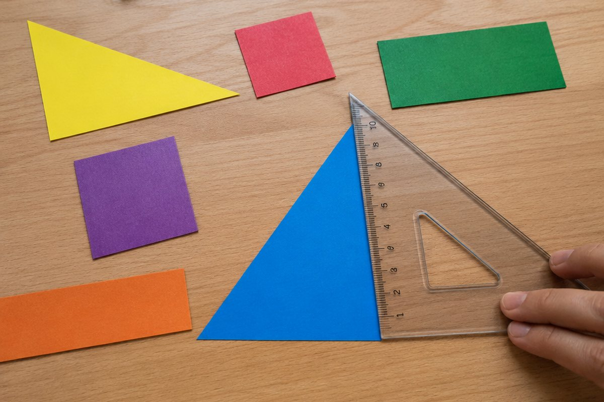

전체 단원 › 3학년 1학기 › 수학 › 평면도형
선과 각으로 어떤 도형을 만들까?

공책, 창문, 책상 모서리를 잘 보면 반듯한 선과 꼭 맞는 각이 숨어 있어요. 평면도형의 이름과 특징을 알아봐요.
선분, 반직선, 직선
두 점을 곧게 이은 선을 선분이라고 해요. 선분 ㄱㄴ처럼 두 점의 이름으로 불러요.
한 점에서 시작해 한쪽으로 끝없이 늘인 곧은 선은 반직선, 양쪽으로 끝없이 늘인 곧은 선은 직선이에요.
점 3개를 두 개씩 모두 이으면 선분이 3개 생겨요
각과 직각
한 점에서 그은 두 반직선으로 이루어진 도형을 각이라고 해요. 각을 이루는 점을 꼭짓점, 두 반직선을 변이라고 해요.
종이를 반듯하게 두 번 접었을 때 생기는 각을 직각이라고 해요. 시계가 3시를 가리킬 때 두 바늘이 이루는 각도 직각이에요.
3시 정각의 시곗바늘 → 직각
이렇게 찾아요: 직각 확인하기
① 삼각자의 직각인 부분이나 접어 만든 직각 종이를 준비해요. ② 각의 꼭짓점에 직각 부분의 꼭짓점을 맞춰요.
③ 한 변을 겹친 뒤 다른 한 변도 꼭 겹치면 직각이에요. 직각은 꼭짓점에 작은 꺾쇠(∟) 표시를 해서 나타내요.
직사각형의 네 각에 삼각자를 대 보면 모두 꼭 맞아요 → 직각 4개
직각삼각형, 직사각형, 정사각형
한 각이 직각인 삼각형은 직각삼각형이에요. 네 각이 모두 직각인 사각형은 직사각형이에요.
네 각이 모두 직각이고 네 변의 길이도 모두 같은 사각형은 정사각형이에요. 그래서 정사각형은 직사각형이라고도 할 수 있지만, 모든 직사각형이 정사각형은 아니에요.
직각삼각형: 직각 1개, 직사각형: 직각 4개, 정사각형: 직각 4개 + 네 변의 길이가 같음
핵심 낱말
- 선분
- 두 점을 곧게 이은 선
- 반직선
- 한 점에서 한쪽으로 끝없이 늘인 곧은 선
- 직선
- 양쪽으로 끝없이 늘인 곧은 선
- 각
- 한 점에서 그은 두 반직선으로 이루어진 도형
- 직각
- 종이를 반듯하게 두 번 접었을 때 생기는 각
- 정사각형
- 네 각이 직각이고 네 변의 길이가 같은 사각형
한 줄 정리
- 선분은 두 점을 이은 선, 반직선은 한쪽으로, 직선은 양쪽으로 끝없이 늘인 선이에요.
- 종이를 반듯하게 두 번 접은 각이 직각이에요.
- 직각삼각형은 직각 1개, 직사각형은 직각 4개, 정사각형은 직각 4개에 네 변이 모두 같아요.
학교 교육과정 연결
- [4수03-01] 직선, 선분, 반직선을 이해하고 구별할 수 있다.
- [4수03-02] 각과 직각을 이해하고, 직각과 비교하는 활동을 통하여 예각과 둔각을 구별할 수 있다.
- [4수03-10] 여러 가지 모양의 사각형에 대한 분류 활동을 통하여 직사각형, 정사각형, 사다리꼴, 평행사변형, 마름모를 이해하고, 그 성질을 탐구하고 설명할 수 있다.